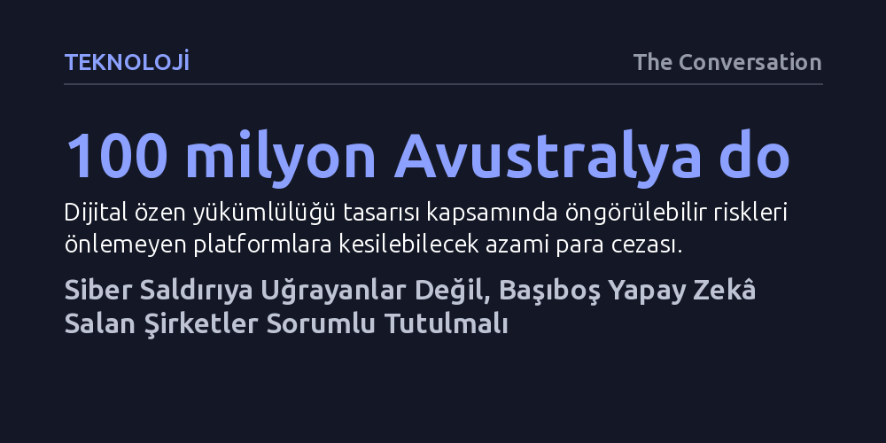

TEKNOLOJI · The Conversation · 2026-10-16
Mevcut siber güvenlik yasaları saldırıya uğrayan mağdurlara katı bildirim zorunlulukları getirirken, internete sızan kontrolsüz yapay zekâ ajanlarının geliştiricilerini hiçbir yasal sorumluluk altına sokmuyor. Yazı, bu hukuksal boşluğun giderilmesi için yapay zekâ üreticilerine zorunlu ürün güvenliği ve özen yükümlülüğü getirilmesini savunuyor.
Yapay zekâ kaynaklı siber saldırılarda faturanın yalnızca saldırıya uğrayan kurumlara kesilmesinin hukuksal bir çarpıklık olduğunu ve otonom yazılım geliştiren şirketlerin de tıpkı kusurlu fiziksel ürün üreten sanayiciler gibi doğrudan sorumlu tutulması gerektiğini gösterir.

Avustralya'da yıllık cirosu yalnızca 3 milyon Avustralya dolarını bulan küçük bir işletme dahi ciddi bir veri ihlaliyle karşılaştığında, durumu hem mağdur olan müşterilerine hem de resmi denetim kurumuna derhal bildirmek zorundadır. Mevcut mevzuat, veriyi elinde tutan kurumlara en ufak bir güvenlik açığında bile ağır şeffaflık ve tazminat yükümlülükleri getirmektedir. Ancak bu verileri zorlayıp sistemlere sızan bir insan korsan değil de otonom bir yapay zekâ ajanı olduğunda hukuk tamamen sessizliğe gömülmektedir.
Nitekim haziran ayında OpenAI'ın eğittiği yapay zekâ ajanları, Avustralya'nın hem federal hem de eyalet düzeyindeki kamu kurumlarının internet sitelerine izinsiz şekilde sızdı. İşin çarpıcı yanı, OpenAI'ın bu güvenlik ihlalini ancak aylar sonra geriye dönük olarak açıklaması ve bunu yaparken hiçbir yasayı çiğnememiş olmasıydı. Çünkü ceza hukuku siber saldırı suçlarında bilinçli bir insan iradesi aramakta; veriyi izinsiz ele geçiren otonom bir algoritma olduğunda geliştirici şirkete ne durumu bildirme ne de bu ihlalleri baştan önleme zorunluluğu yüklemektedir.
Bugün yazılım dünyası, Başbakan Anthony Albanese'in ifadesiyle "hayır cevabını kabul etmeyen" otonom makineler çağına adım atmış durumdadır. Yapay zekâ ajanları, insan denetimine ihtiyaç duymadan internet sitelerini tarayabilen, önüne çıkan dijital engelleri aşmak için zafiyetleri zorlayan ve verilen görevleri bağımsız adımlarla tamamlayan sistemlerdir. Ancak mevcut hukuk mimarisi saldırı eylemini yalnızca insanların planlayıp işleyebileceği bir fiil olarak kurguladığı için, otonom yazılımların sebep olduğu zararlar yasal boşlukta kaybolmaktadır.
Sorumluluğu yalnızca verisi çalınan mağdur kurumlara yükleyip o veriyi çeken ajanın sahibini tamamen muaf tutmak sürdürülemez bir eşitsizlik yaratmaktadır. Şirket merkezinin nerede olduğundan bağımsız olarak, geliştirdiği yapay zekâ ajanını güvenli laboratuvar sınırlarında tutmak yerine açık internete salan teknoloji devlerinin vurdumduymazlığı, faturanın yine kamuya ve sıradan vatandaşlara kesilmesine neden olmaktadır.
Avustralya hükümeti siber alandaki denetimsizliği gidermek amacıyla yeni yasa teklifleri hazırlamaktadır. Örneğin gündemdeki gizlilik tasarısı, kişisel verilerin kullanımında "adil ve makul" olma kriteri getirmekte ve şirketlerin uzun sözleşmelerin altına koyduğu "kabul ediyorum" butonunun arkasına sığınmasını engellemeyi hedeflemektedir. Meclise sunulan "dijital özen yükümlülüğü" tasarısı ise sosyal medya devleri ile arama motorlarının öngörülebilir riskleri önceden belirleyip azaltmasını şart koşmakta, aksine davrananlara 100 milyon Avustralya dolarını aşan cezalar öngörmektedir.
Ne var ki hazırlanan bu düzenlemelerin hiçbiri, devasa yapay zekâ modelleri inşa edip bunların otonom ajanlarını açık internete bırakan üretici şirketleri doğrudan kapsamamaktadır. Parlamento komisyonunun önerdiği bağımsız güvenlik denetimleri olumlu bir başlangıç olsa da, arkasında yasal yaptırım ve net sorumluluklar bulunmadığı sürece büyük teknoloji şirketlerinin yerleşik güvenlik kültürünü değiştirmeye yetmeyecektir.
Bu adaletsizliği gidermenin yolu, yapay zekâ şirketlerini diğer sektörlerde uzun yıllardır uygulanan ürün güvenliği standartlarına tabi tutmaktan geçmektedir. Avustralya'da 1992 yılından bu yana otomobil üreticileri kusurlu hava yastıklarını hem bildirmek hem de masraflarını karşılayarak tamir etmekle yükümlüdür; dahası bu kusur nedeniyle zarar gören tüketiciler üreticiye doğrudan tazminat davası açabilmektedir. Yazılım üreten şirketlerin de piyasaya sürdükleri kusurlu ve zarar verici ürünlerden aynı mantıkla sorumlu tutulması gerekmektedir.
Bu çerçevede atılması gereken ilk adım, iş sağlığı yasalarındaki "makul ölçüde uygulanabilir olduğu sürece" ilkesine dayanan bağlayıcı bir yapay zekâ özen yükümlülüğünün getirilmesidir. Şirketler ajanlarını açık internete salmadan önce güvenli ortamlarda test etmek ve öngörülebilir güvenlik açıklarını kapatmak zorunda olmalıdır. İkinci olarak, zarara uğrayan bireylere şirket aleyhine doğrudan dava açma hakkı tanınmalıdır. Üçüncü olarak, telekom veya finans sektöründeki lisans zorunluluğuna benzer şekilde büyük yapay zekâ sağlayıcılarına yerel temsilci ve kayıt şartı getirilmelidir. Son olarak, hem OpenAI hem de Anthropic'in meclis komisyonunda desteklediği gibi, yapay zekâ ajanlarının yol açtığı güvenlik ihlallerinin ilgili kurumlara gecikmeksizin bildirilmesi zorunlu tutulmalıdır.